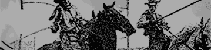
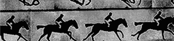

Experiments
Bite-size snippets of code exploring an idea that may or may not be practical or even sane.
-

CSS Shaky Animation
I've always loved the shaky animation style of a lot of cartoons. This demo brings that style to the browser with some CSS tricks and a little elbow grease.
-
CSS Write-on Text Effect
Handwritten text being drawn onto the screen is a common effect in motion graphics. In this demo I recreate that effect using web technologies.
-

CSS Animated Slideshows
Revolving image galleries made with only CSS animations? Get out! Feast your eyes on some new wave CSS goodness.
-

CSS Animated Sprites
Wait, did I just recreate animated gifs using only CSS animations? I sure as hell did. Might not be the most practical thing, but it sure is cool!